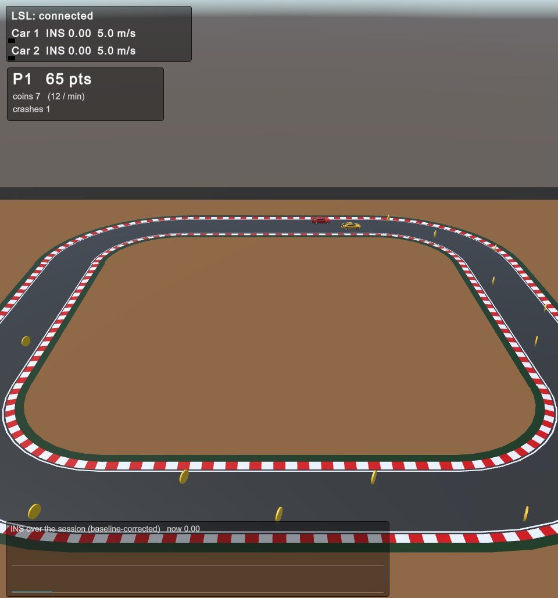
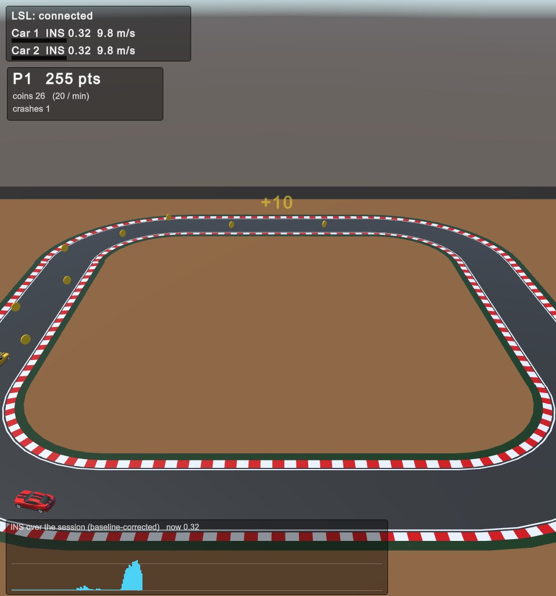
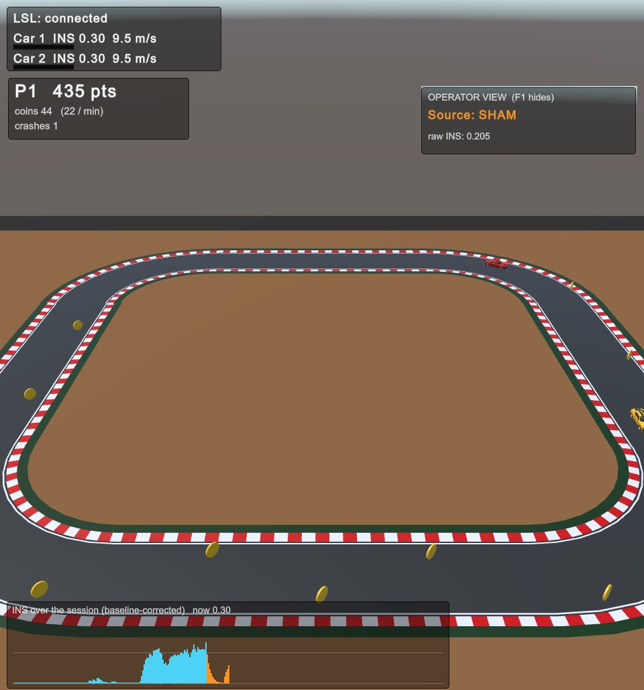
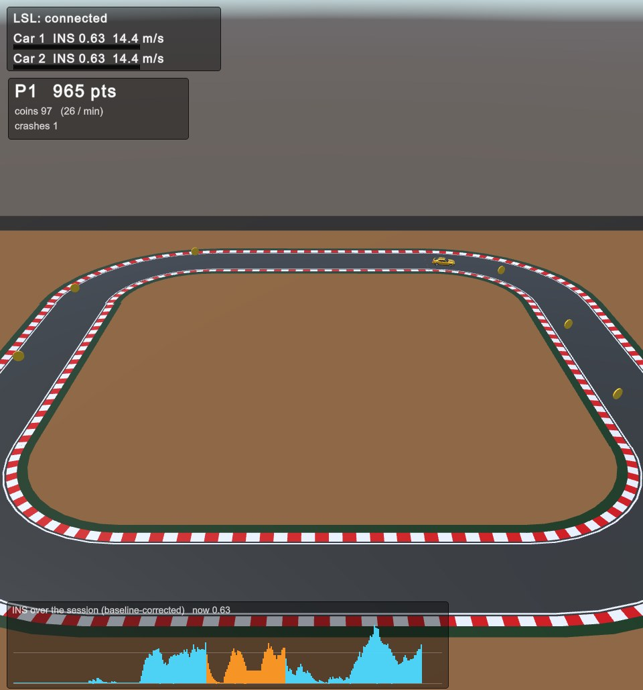

Synthetic fNIRS through the real pipeline

mindX · START programme
Hyperscanning neurofeedback with fNIRS and mixed reality
Status report with a demonstration on synthetic data
Problem statement
Hypotheses
| ID | Claim | Evidence |
|---|---|---|
| H1 | Dyads raise INS with joint feedback | Early versus late sessions, controlled for baseline |
| H2 | The effect exceeds sham feedback | Within group, one sham session in three |
| H3 | Cooperation transfers without feedback | Exchange game, pre versus post |
Solution approach
Two NIRSport2 systems, PFC and right TPJ, short channels
Causal online processing and one joint INS value
Speed and pitch of a shared car in mixed reality
Regulation, sham control, transfer task
All streams share one LSL clock. Storage runs off the feedback path.
Design rationale
| Choice | Reason |
|---|---|
| fNIRS | Better localisation than EEG, tolerates motion, suits adolescents |
| Joint INS value | Targets the social process itself, not one brain |
| Causal processing | No future samples, so feedback is never late |
| Mixed reality | Partners see each other, which favours transfer |
| Sham from another dyad | Controls reward and unrelated training effects |
Signal chain
Baseline reference
Motion correction
Physiology regression
HbO and HbR
0.01 to 0.1 Hz, 22 s
Baseline corrected
Implemented with MNE-NIRS, causal at every step.
Results so far
0.08 to 0.17
INS when injected coherence rises from 0.1 to 0.9
22 s
window: a 60 s window saturates and loses range
7 ms
mean processing time per frame
Results so far · game

Results so far · game

Results so far · control

Results so far · behaviour

Results so far · placeholder
| Player | Level | Speed | Coins per minute |
|---|---|---|---|
| Player 1 | 0.80 | 17.1 m/s | 38 |
| Player 2 | 0.39 | 10.8 m/s | 22 |
Demo placeholder feature: own HbO band power. It does not settle the open choice of a per-participant feature.
Results and targets
Challenges
Outlook
| Step | Content | Time |
|---|---|---|
| Level B | One person, live fNIRS | 2 to 4 weeks |
| Level C | Two people, live and co-located | 1 to 2 months or more |
| Study | Three sessions, one sham, transfer task | After ethics approval |
| Analysis | Bayesian models, open source toolbox | WP5 |